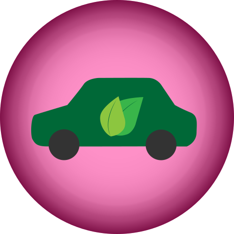
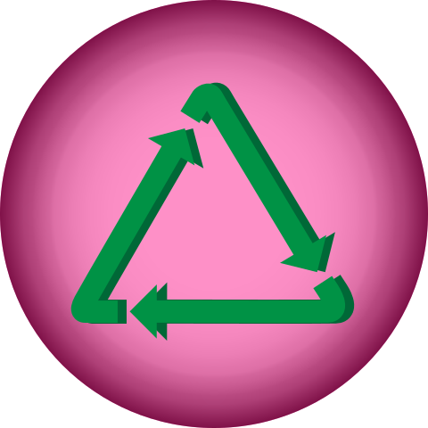
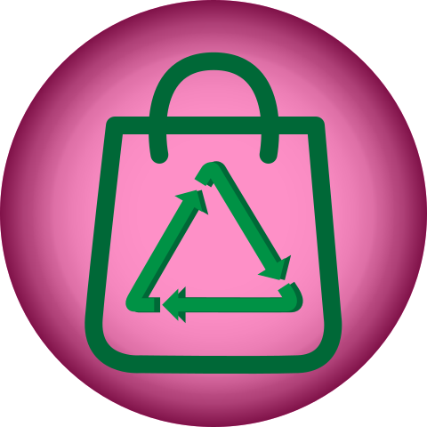
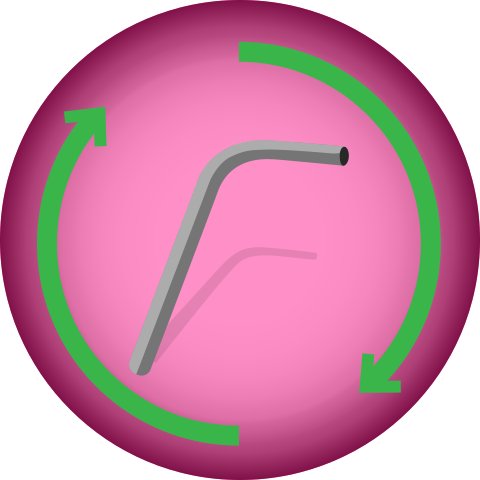
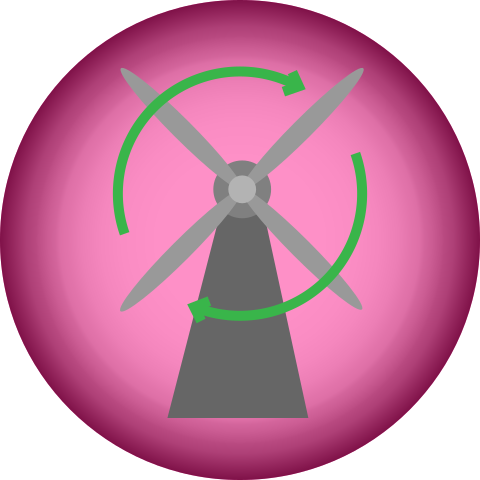
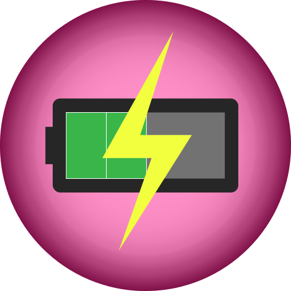

Eco-Concious Icons
Taylor's Eco-Concious Icons
Eco-Friendly lightbulbs help conserve energy and do not need to be changed as often, saving waste.

Eco-friendly Cars cut down on emissions and help save you money in gas, too!
Say no to pollution: Cut down on high-consumption products

Remember to "Reduce, Reuse, Recycle"

Purchasing a canvas/material bag helps cut down on plastic waste created by plastic bags
Grow your own at home or buy locally to support your community!

Buying a metal, reuseable straw helps reduce your environmental footprint
Earth's rising temperatures due to pollution and over-consumption

Purchasing a canvas/material bag helps cut down on plastic waste created by plastic bags

Using rechareable batteries is another great way to reduce consumption costs and materials.